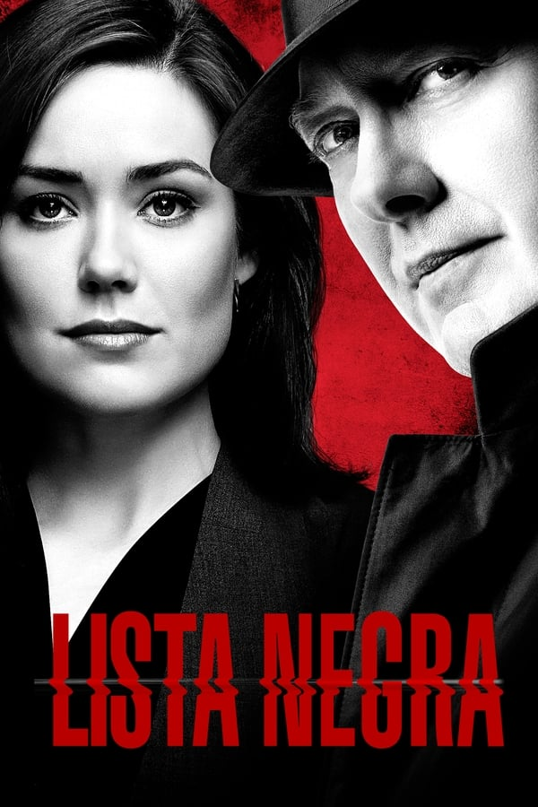

LUPIN
2021 |
Na adolescência, a vida de Assane Diop dá uma guinada radical quando seu pai morre após ser acusado de um crime que não cometeu. Vinte e cinco anos depois, Assane se inspira em "Arsène Lupin, o Ladrão de Casaca" para vingá-lo.
Estrelando:
Omar Sy,Ludivine Sagnier,Clotilde Hesme
Criação: George Kay
Criação: George Kay
O vencedor do Emmy Louis Leterrier dirige esta série estrelada por Omar Sy (Intocáveis).
Títulos Semelhantes
